|
|
HOME
ABOUT 
MAPS WELCOME RELIEF SPEECHES PROTESTS MEMORIAL VICTORY LINKS |
Prisoners of War Iraqi forces surrendered by the tens of thousands. Most were allowed to give up their arms & return to their homes, but over 9,000 of the most fanatical or otherwise deemed dangerous were held. A handful of allied personnel were taken prisoner, some mistreated & some executed.
[Baghdad] [Basra] [Drive on Baghdad] [The North] [The Air] [The Sea] [POW'S] [Let's Roll] [Back] 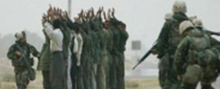 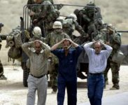 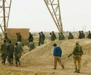 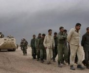 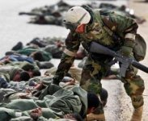 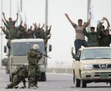 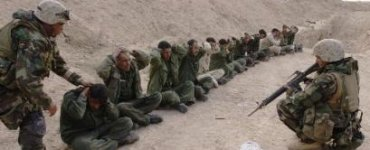 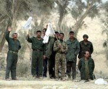 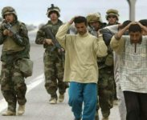 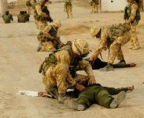 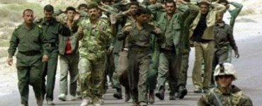 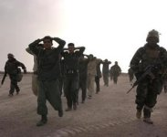 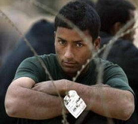 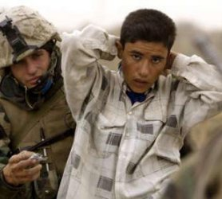 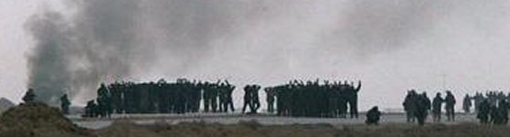 U.S Prisoners of war held by the Iraqis were taken from an ambushed 507th Maintenance Company on March 23rd, and from a shot down Apache helicopter. Several members of the 507th were executed after capture. Six were held and are pictured here. Private Lynch, pictured in the second row, was rescued by a Joint Operation special force of SEALS, Rangers and others from her captors on April 2nd. 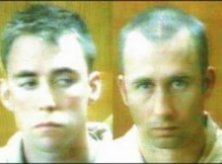 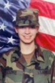 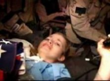 On April 13th, 2003, American forces advancing to the north of Baghdad, in the vicinity of the town of Samarra, encountered Iraqi Police officers who indicated that they knew the U.S. forces were searching for U.S. POWS still being held by the Ba'ath party. They indicated they were willing to turn over these prisoners to the Americans. The surrender was arranged and to the astonishment and thanks of millions, all seven of the remaining known U.S. POWS were miraculously recovered safely after 20 days in captivity. 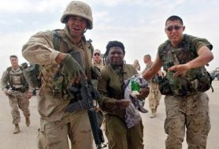 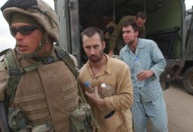 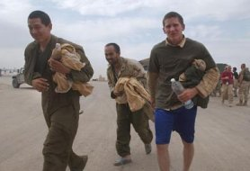 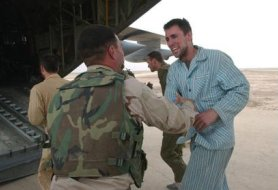
|

Sign Guestbook Copyright © 2003 by Jeff Head. All Rights Reserved. View Guestbook
Web Site by Just-Fix-It Web Services

free hit counter